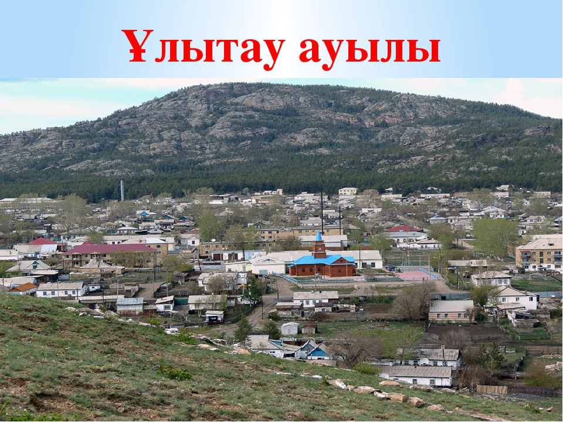

Ұлытау ауданы

Ұлытау ауданы — Қарағанды облысының батысында орналасқан әкімшілік бөлік. Аудан 1927 жылы құрылған. Аудан аумағы 122,9 мың шаршы километрге тең. Орталығы – Ұлытау ауылы.Тұрғындары 12 822 адам (2019). Ұлттық құрамы: қазақтар (93,37%), орыстар (5,07%), татарлар (0,39%), украиндар (0,30%), немістер (0,54%), басқа ұлт өкілдері (0,64%).2006 жылы ауыл шаруашылығы өнімінің айтарлықтай бөлігін мал шаруашылығы құрайды. Аймақта ауыл шаруашылығы өнімін өндіруге 1611,0 мың гектар ауыл шаруашылығы жерлер пайдаланылады, оның ішінде 71,0 мың га - егістік алқаптар. 2006 жылғы астыққа 41,6 мың га ауыл шаруашылық дақылдары егілетін егістік жерлер пайдаланылды, оның ішінде 38,2 мың га дәнді дақылдар, 28,0 га - картоп, 14,0 га - көкөніс. 2006 жылы 6,1 мың тонна дән, 0,5 мың тонна картоп, 0,3 мың тонна көкөніс дақылдары, 9,9 мың тонна ет (тірі салмақта); 15,5 мың тонна сүт, 912,5 мың дана жұмыртқа өндірілді. 2006 жылғы 1 қаңтарға ірі қара мал саңы 30,7 мың бас; қой мен ешкі – 164,5 мың бас; жылқы – 12,1 мың бас; құс – 5,9 мың басты құрады.
Өндірілетін өнеркәсіптік өнімнің негізгі түрлері: нан және нан өнімдерін, ұн, өсімдік майы, металл кендерін шығару. 2006 жылғы өндірістік өнім көлемі (үй шаруашылық есебінсіз) 109,0 млн. теңгені құрады.Шұғыл континенталды ауа райы қалыптасқан аймақ болғандықтан Ұлытау өңірінде Сібірдің сақылдаған аязы мен Орта Азияның ауыз аштырмас аптабы тоғысып тұрады. Ұлытаудың қысы қатаң, жазы ыстық. Жаздағы орташа температура +22 ºС болса, қыста бұл көрсеткіш -22 ºС тең. Аудан бойынша ең суық ай – қаңтар, бұл айда орташа температура -14 -16 ºС болғанмен, абсолюттік минимум -42 -50 ºС дейін төмендейді. Жыл бойындағы ең ыстық ай – шілде, оның орташа температурасы +19-25 ºС , алайда абсолюттік минимум (ең жоғарғы температура) +38-46 ºС деңгейді көрсетеді. Осыған сай ауа температурасының жылдық ауытқуы (ең төменгі және жоғарғы температуралар қосындысы) – 96 ºС.
Аудан аумағының басым бөлігінде жыл бойына жауын-шашын 200 мм-ден кем түседі. Өлкенің оңтүстігі және батысындағы құмдарға жаңбыр мен қар тіпті аз жауады. Арал маңы Қарақұмдағы бұл көрсеткіш мүлдем төмен, бар болғаны 80 мм шамасында ғана.
Аудан жерінің таулы, қыраттары бөлігінде яғни солтүстікке қарай жылдық ылғал мөлшері анағұрлым артады. Оның көлемі 200-250 мм-ге жетеді. Ең ылғалды жауын-шашынды жер – Ұлытау тауының айналасы. Бұл маңайда жылдық ылғал мөлшері 300-350 мм.
